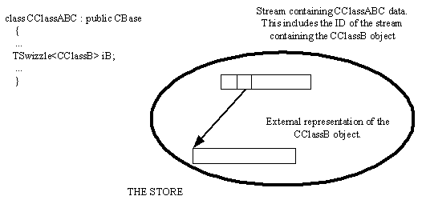
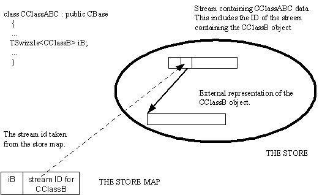

|
| |
Typically, externalizing a Swizzle is a two stage process which involves:
externalizing the in-memory object which the Swizzle represents, to its own stream
externalizing the resulting stream ID.
For example, given a container type object, CClassABC,
with a data member TSwizzle<CClassB> iB representing
a CClassB object in memory, the diagram below illustrates the
result of storing the container object.

The following code fragments illustrates the process.
iB is a CClassB type component of a class
CClassABC, and is represented by a Swizzle. The data member is
defined as:
class CCClassABC : public CBase
{
...
TSwizzle<CClassB> iB;
...
}
Typically, a CClassB object is constructed and assigned
to iB; this uses the Swizzle’s assignment operator:
iB = CClassB::NewL();
The Swizzle now represents the CClassB object by
pointer.
The StoreL() member function of CClassABC
constructs a store map, an object of type CStoreMap, before
calling StoreComponentsL() to externalise the swizzled
CClassB object to its own stream.
TStreamId CClassABC::StoreL() const
{
CStoreMap* map=CStoreMap::NewLC(iStore);
StoreComponentsL(*map);
RStoreWriteStream stream(*map);
TStreamId id=stream.CreateLC(iStore);
ExternalizeL(stream);
stream.CommitL();
map->Reset();
CleanupStack::PopAndDestroy(2);
return id;
}
The variable iStore is a member of
CClassABC containing a reference to the store.
StoreComponentsL() externalises the swizzled
CClassB object by calling CClassB’s own
StoreL() member function which constructs a stream, externalises
itself to the stream and returns the ID of that stream:
void CClassABC::StoreComponentsL(CStoreMap& aMap) const
{
...
TStreamId id;
if (iB)
{
id = iB->StoreL(iStore); // Id of the CClassB stream
aMap.BindL(iB,id);
}
...
}
The Swizzle must represent the CClassB type object as a
pointer, i.e. the swizzled object must be in memory. The
operator-> applied to the Swizzle iB gives access
to the StoreL() member function of the CClassB
object.
The condition if (iB) is equivalent to if
(iB.IsPtr()) and returns true only if the Swizzle represents the
CClassB object as a pointer . The act of externalizing the
CClassB object, does not, and need not change the way that the
Swizzle represents that object. Here, the CClassB object remains
in memory and the Swizzle maintains its representation of it as a pointer, even
after it has been externalised.
The Stream ID of the externalised CClassB object is
stored in the store map along with the associated Swizzle using
CStoreMap’s BindL() member function .The store map
is used again later when the stream ID is externalised as part of
CClassABC’s data.
The ExternalizeL() member function of
CClassABC externalises CClassABC's member data. This
includes the stream ID of the externalised CClassB object which is
externalised by applying the templated stream operator<< to
the Swizzle iB.
void CCompound::ExternalizeL(RWriteStream& aStream) const
{
...
aStream << iB
...
}
At this point, the Swizzle still represents the CClassB
object as a pointer, and the object itself is still in memory.
The mechanism underlying the implementation of the stream
operator<<, assumes that the stream ID associated with the
Swizzle has been placed in the store map. It also assumes that the
RStoreWriteStream object has been constructed, specifying the
store map as an externalizer.
The end result of the operation aStream << iB;, is
to externalise, to the stream, the stream ID associated with the Swizzle
iB. The following diagram shows this:

Copyright ©2002 Symbian Ltd. 6.1-00174 |
|